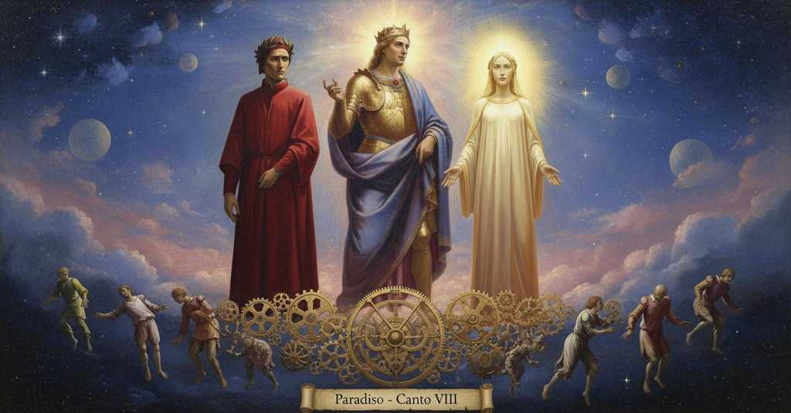

Paradiso — Canto 8

In the heaven of Venus, Dante meets Charles Martel, who explains that divine providence assigns diverse natures to individuals for society's good, regardless of their family lineage. 金星天に昇ったダンテは、シャルル・マルテルから、社会が個々の天性を無視して役割を強制することが悪を生む原因だと教えられる。
1
Solea creder lo mondo in suo periclo
The world in its peril used to believe
かつて世は、その危うさのうちに信じていた
2
che la bella Ciprigna il folle amore
that the beautiful Cyprian the mad love
美しきキプロスの女神が、狂おしい愛を
3
raggiasse, volta nel terzo epiciclo;
radiated, turning in the third epicycle;
第三の周転円を回りながら、放射すると。
4
per che non pur a lei faceano onore
for which not only to her did they pay honor
そのため、彼女にのみならず敬意を払った
5
di sacrificio e di votivo grido
with sacrifice and with votive cry
犠牲と祈願の叫びをもって
6
le genti antiche ne l’antico errore;
the ancient peoples in their ancient error;
古の人々はその古き誤りのうちに。
7
ma Dïone onoravano e Cupido,
but Dione they honored and Cupid,
ディオーネーとクピードーをも崇め、
8
quella per madre sua, questo per figlio,
that one as her mother, this one as her son,
前者をその母として、後者をその子として、
9
e dicean ch’el sedette in grembo a Dido;
and they said that he sat in Dido’s lap;
そして彼はディードーの膝に座ったと言い、
10
e da costei ond’ io principio piglio
and from her from whom I take my beginning
そして私が語り始めるこの女神から
11
pigliavano il vocabol de la stella
they took the name for the star
彼らはその星の名を取った
12
che ’l sol vagheggia or da coppa or da ciglio.
that the sun woos now from the nape, now from the brow.
太陽が時にうなじから、時に眉から慕う星の。
13
Io non m’accorsi del salire in ella;
I did not notice the ascent into it;
私はそこへ昇ったことに気づかなかった。
14
ma d’esservi entro mi fé assai fede
but that I was within it my lady gave me ample faith
だが、その中にいることを私に確信させたのは
15
la donna mia ch’i’ vidi far più bella.
my lady whom I saw become more beautiful.
私が見た、より美しくなった我が貴婦人であった。
16
E come in fiamma favilla si vede,
And as in a flame a spark is seen,
そして炎の中に火花が見え、
17
e come in voce voce si discerne,
and as in a voice a voice is discerned,
声の中に声が聞き分けられるように、
18
quand’ una è ferma e altra va e riede,
when one is held and another goes and returns,
一つが留まり、他方が行き来する時に、
19
vid’ io in essa luce altre lucerne
I saw in that light other lamps
私はその光の中に、他の光が
20
muoversi in giro più e men correnti,
moving in a circle more and less swift,
より速く、またより遅く、輪を描いて動くのを見た、
21
al modo, credo, di lor viste interne.
according, I believe, to their internal visions.
思うに、彼らの内なる視覚に応じて。
22
Di fredda nube non disceser venti,
From a cold cloud winds never descended,
冷たい雲から風が下ることはなかった、
23
o visibili o no, tanto festini,
whether visible or not, so swift,
目に見えるものも見えぬものも、これほど速くは、
24
che non paressero impediti e lenti
that they would not have seemed impeded and slow
妨げられ、緩慢であると思われぬほどには
25
a chi avesse quei lumi divini
to one who had seen those divine lights
もし誰かが、かの神々しい光が
26
veduti a noi venir, lasciando il giro
seen coming to us, leaving the circle
我らの方へ来るのを見たならば、その輪舞を離れて
27
pria cominciato in li alti Serafini;
first begun in the high Seraphim;
高きセラフィムの中で先に始められた輪舞を。
28
e dentro a quei che più innanzi appariro
and within those that appeared more in front
そして、最も前に現れた者たちの内からは
29
sonava ‘Osanna’ sì, che unque poi
sounded ‘Hosanna’ so, that never since
「オザンナ」が響いていた、その後決して
30
di rïudir non fui sanza disiro.
was I without desire to hear it again.
再び聞きたいという望みを欠いたことはないほどに。
31
Indi si fece l’un più presso a noi
Then one made itself nearer to us
その後、一人のが我らに最も近づき
32
e solo incominciò: «Tutti sem presti
and alone began: “We are all ready
そして独りで語り始めた。「我々は皆、準備ができております
33
al tuo piacer, perché di noi ti gioi.
for your pleasure, so that you may joy in us.
あなたの喜びに、あなたが我らによって喜ぶために。
34
Noi ci volgiam coi principi celesti
We turn with the celestial princes
我らは天上の君侯たちと共に回っております
35
d’un giro e d’un girare e d’una sete,
of one circle and of one circling and of one thirst,
一つの輪舞と一つの回転と一つの渇望をもって、
36
ai quali tu del mondo già dicesti:
to whom you in the world once said:
彼らについて、あなたはかつて現世でこう言われました。
37
‘Voi che ’ntendendo il terzo ciel movete’;
‘You who by understanding move the third heaven’;
『汝ら、知性によって第三の天を動かす者よ』と。
38
e sem sì pien d’amor, che, per piacerti,
and we are so full of love that, to please you,
そして我らはかくも愛に満ちており、あなたを喜ばせるためならば、
39
non fia men dolce un poco di quïete».
a little quiet will be no less sweet.”
しばしの静寂も劣らず甘美でありましょう」。
40
Poscia che li occhi miei si fuoro offerti
After my eyes had been offered
私の目が捧げられた後
41
a la mia donna reverenti, ed essa
to my lady reverently, and she
我が貴婦人に敬虔に、そして彼女が
42
fatti li avea di sé contenti e certi,
had made them content and certain of herself,
それらを彼女自身によって満足させ、確信させた後、
43
rivolsersi a la luce che promessa
they turned back to the light that had promised
多くのことを約束した光へと
44
tanto s’avea, e «Deh, chi siete?» fue
so much, and “Ah, who are you?” was
向き直り、「ああ、あなた方はどなたですか」というのが
45
la voce mia di grande affetto impressa.
my voice, stamped with great feeling.
大いなる情愛に刻まれた私の声であった。
46
E quanta e quale vid’ io lei far piùe
And how great and of what kind I saw it become more so
そして、いかに、どのようなものに、彼女がより大きくなるのを私は見たことか
47
per allegrezza nova che s’accrebbe,
through the new gladness that was added,
新たな喜びが加わったことで、
48
quando parlai, a l’allegrezze sue!
when I spoke, to its gladnesses!
私が話した時、彼女の喜びの上に！
49
Così fatta, mi disse: «Il mondo m’ebbe
Thus fashioned, he said to me: «The world had me
このようにして、彼は私に言った、「世は私を
50
giù poco tempo; e se più fosse stato,
down there for a short time; and if it had been longer,
地上に短時間しか持たなかった。そしてもしもっと長かったなら、
51
molto sarà di mal, che non sarebbe.
much evil that is to be, would not have been.
起こらなかったであろう多くの悪が、起こることになる。
52
La mia letizia mi ti tien celato
My gladness keeps me hidden from you,
私の喜びが、あなたから私を隠している、
53
che mi raggia dintorno e mi nasconde
which radiates around me and conceals me
私の周りで輝き、私を覆い隠すのは
54
quasi animal di sua seta fasciato.
like an animal swathed in its own silk.
まるで自らの絹に包まれた動物のように。
55
Assai m’amasti, e avesti ben onde;
You loved me much, and you had good reason;
あなたは私を大いに愛した、そしてその理由は確かにあった。
56
che s’io fossi giù stato, io ti mostrava
for if I had been down there, I would have shown you
もし私が地上にいたなら、あなたに示したであろう
57
di mio amor più oltre che le fronde.
of my love more than just the leaves.
私の愛を、葉だけでなく、その先まで。
58
Quella sinistra riva che si lava
That left bank which is bathed
あの洗われる左岸は
59
di Rodano poi ch’è misto con Sorga,
by the Rhone after it is mixed with the Sorgue,
ソルグ川と混じり合った後のローヌ川の、
60
per suo segnore a tempo m’aspettava,
awaited me in time as its lord,
やがてその主として私を待っていた、
61
e quel corno d’Ausonia che s’imborga
and that horn of Ausonia which is citied
そしてあのアウソニアの角も、それは
62
di Bari e di Gaeta e di Catona,
with Bari and Gaeta and Catona,
バーリとガエータとカトーナによって城塞化され、
63
da ove Tronto e Verde in mare sgorga.
from where the Tronto and Verde gush into the sea.
そこからはトロント川とヴェルデ川が海に注ぐ。
64
Fulgeami già in fronte la corona
The crown already was shining on my brow
私の額にはすでに冠が輝いていた
65
di quella terra che ’l Danubio riga
of that land which the Danube furrows
ドナウ川が潤すあの地の
66
poi che le ripe tedesche abbandona.
after it leaves the German banks.
そのドイツの岸を離れた後の。
67
E la bella Trinacria, che caliga
And beautiful Trinacria, which is darkened
そして美しいトリナクリアも、それは霞む
68
tra Pachino e Peloro, sopra ’l golfo
between Pachino and Peloro, over the gulf
パキーノ岬とペローロ岬の間、あの湾の上で
69
che riceve da Euro maggior briga,
which receives from the east wind the most trouble,
エウロスからより大きな悩みを被る、
70
non per Tifeo ma per nascente solfo,
not because of Typhoeus but for nascent sulfur,
ティフェオのためでなく、湧き出る硫黄のために、
71
attesi avrebbe li suoi regi ancora,
would have still awaited its kings,
今もなおその王たちを待っていたであろう、
72
nati per me di Carlo e di Ridolfo,
born through me from Charles and Rudolf,
私を通して、シャルルとロドルフォから生まれた、
73
se mala segnoria, che sempre accora
if bad government, which always grieves
もし、常に心を痛めつける悪しき統治が
74
li popoli suggetti, non avesse
the subject peoples, had not
臣下の民を、そうでなかったならば
75
mosso Palermo a gridar: “Mora, mora!”.
moved Palermo to cry: ‘Die, die!’.
パレルモを動かして叫ばせなかったなら、「死ね、死ね！」と。
76
E se mio frate questo antivedesse,
And if my brother had foreseen this,
そしてもし私の弟がこれを予見したなら、
77
l’avara povertà di Catalogna
the avaricious poverty of Catalonia
カタルーニャの貪欲な貧しさを
78
già fuggeria, perché non li offendesse;
he would already be fleeing, so that it not harm him;
彼はすでに避けているだろう、それが彼らを傷つけぬように。
79
ché veramente proveder bisogna
for truly it is needful to provide,
なぜなら、真に備えることが必要だからだ
80
per lui, o per altrui, sì ch’a sua barca
by him, or through another, so that on his boat,
彼のため、あるいは他者のため、彼の舟に
81
carcata più d’incarco non si pogna.
already laden, no more weight is placed.
積み荷の上にさらに荷が載せられぬように。
82
La sua natura, che di larga parca
His nature, which from generous became stingy
その彼の性質は、寛大から吝嗇へと
83
discese, avria mestier di tal milizia
descended, would have need of such soldiery
堕したもので、そのような家臣団を必要とするであろう
84
che non curasse di mettere in arca».
that would not care to put things in a coffer».
櫃に蓄えることに関心のない」。
85
«Però ch’i’ credo che l’alta letizia
«Because I believe that the high happiness
「なぜなら、私が信じるに、その至高の喜びは
86
che ’l tuo parlar m’infonde, segnor mio,
that your speech instills in me, my lord,
あなたの言葉が私に注ぐものです、我が主よ、
87
là ’ve ogne ben si termina e s’inizia,
there where every good is ended and begun,
そこでは、あらゆる善が終わり、また始まるのですが、
88
per te si veggia come la vegg’ io,
is seen by you as I myself see it,
あなたには私が見るように見えているはずですから、
89
grata m’è più; e anco quest’ ho caro
is more welcome to me; and I hold this dear as well
私には一層喜ばしく、またこれも貴く思います
90
perché ’l discerni rimirando in Dio.
because you discern it by gazing into God.
あなたが神を見つめてそれを識別されるがゆえに。
91
Fatto m’hai lieto, e così mi fa chiaro,
You have made me happy, and so make clear to me,
あなたは私を喜ばせました、ならばどうか明らかにしてください、
92
poi che, parlando, a dubitar m’hai mosso
since, in speaking, you have moved me to doubt
あなたの言葉が、私に疑いを抱かせたのですから
93
com’ esser può, di dolce seme, amaro».
how from a sweet seed can come something bitter».
いかにして甘い種から、苦いものが生じうるのか、と」。
94
Questo io a lui; ed elli a me: «S’io posso
This I to him; and he to me: «If I can
これを私は彼に、すると彼は私に言った、「もし私が
95
mostrarti un vero, a quel che tu dimandi
show you a truth, to what you now ask
一つの真理を示すことができるなら、あなたの問いに対して
96
terrai lo viso come tien lo dosso.
you will hold your face as you now hold your back.
今背を向けているように、顔を向けることになるでしょう。
97
Lo ben che tutto il regno che tu scandi
The Good which all the kingdom you ascend
あなたが登るこの王国全体を
98
volge e contenta, fa esser virtute
revolves and makes content, makes a power
動かし満たす善は、その摂理を徳として
99
sua provedenza in questi corpi grandi.
of its providence in these great bodies.
この大いなる天体に宿らせるのです。
100
E non pur le nature provedute
And not only are the natures provided for
そして、摂理に備えられた自然だけでなく
101
sono in la mente ch’è da sé perfetta,
in the mind which is in itself perfect,
それ自体が完全な御心のうちにあるのですが、
102
ma esse insieme con la lor salute:
but they together with their well-being:
それらはその救いと共にあるのです。
103
per che quantunque quest’ arco saetta
for whatever this bow shoots as its arrow
それゆえ、この弓が射るものは何であれ
104
disposto cade a proveduto fine,
falls disposed to a foreseen end,
定められた結末へと定められて落ちるのです、
105
sì come cosa in suo segno diretta.
just as a thing directed to its mark.
まるで的へと向けられたもののように。
106
Se ciò non fosse, il ciel che tu cammine
If this were not so, the heaven you travel through
もしそうでなければ、あなたが旅するこの天は
107
producerebbe sì li suoi effetti,
would so produce its effects,
その作用をかくのごとく生み出し、
108
che non sarebbero arti, ma ruine;
that they would not be works of art, but ruins;
それらは術ではなく、ただの廃墟となるでしょう。
109
e ciò esser non può, se li ’ntelletti
and that cannot be, if the intellects
そしてそれはありえない、もし知性たちが
110
che muovon queste stelle non son manchi,
that move these stars are not deficient,
これらの星を動かすに欠けるところがなく、
111
e manco il primo, che non li ha perfetti.
and deficient the first, who did not make them perfect.
彼らを完全に創られなかった第一の者も欠けていないならば。
112
Vuo’ tu che questo ver più ti s’imbianchi?».
Do you wish this truth to be made whiter for you?».
この真理があなたにとってさらに白く（明らかに）なることを望みますか」。
113
E io: «Non già; ché impossibil veggio
And I: «Not so; for I see it is impossible
すると私、「いいえ、なぜなら不可能だとわかりますから
114
che la natura, in quel ch’è uopo, stanchi».
that Nature, in what is needed, should ever tire».
自然が、必要なことにおいて、疲れることは」。
115
Ond’ elli ancora: «Or dì: sarebbe il peggio
Wherefore he again: "Now say: would it be the worse
そこで彼は再び言った、「さて言え、最悪であろうか
116
per l’omo in terra, se non fosse cive?».
for man on earth, if he were not a citizen?".
地上の人にとって、もし市民でなかったならば？」。
117
«Sì», rispuos’ io; «e qui ragion non cheggio».
"Yes," I replied; "and here I ask for no reason."
「はい」と私は答えた、「そしてここに理由は求めません」。
118
«E puot’ elli esser, se giù non si vive
"And can that be, if down there one does not live
「そしてそれはありえようか、もし地上で生きないのであれば
119
diversamente per diversi offici?
differently for different offices?
多様な職務によって多様に？
120
Non, se ’l maestro vostro ben vi scrive».
No, if your master writes well for you."
否、もし汝らの師が汝らに正しく書いているならば」。
121
Sì venne deducendo infino a quici;
Thus he came deducing down to this point;
かくして彼はここまで推論を進め、
122
poscia conchiuse: «Dunque esser diverse
then he concluded: "Therefore diverse
そして結論づけた、「ゆえに多様でなければならぬ
123
convien di vostri effetti le radici:
must be the roots of your effects:
汝らの結果の根源は。
124
per ch’un nasce Solone e altro Serse,
for which one is born a Solon and another a Xerxes,
それゆえ一人はソロンと生まれ、他はクセルクセス、
125
altro Melchisedèch e altro quello
another a Melchizedek and another that one
他はメルキゼデク、そして他はかの者、
126
che, volando per l’aere, il figlio perse.
who, flying through the air, lost his son.
空を飛ぶうちに、息子を失った者と。
127
La circular natura, ch’è suggello
The circling nature, which is a seal
円を描いて巡る自然は、印章であるが
128
a la cera mortal, fa ben sua arte,
to the mortal wax, does its art well,
死すべき蝋への、その術をよく行う、
129
ma non distingue l’un da l’altro ostello.
but does not distinguish one from another lodging.
だが一つの宿と他の宿を区別しない。
130
Quinci addivien ch’Esaù si diparte
Hence it happens that Esau departs
ここからエサウが分かれることになる
131
per seme da Iacòb; e vien Quirino
in seed from Jacob; and Quirinus comes
種によってヤコブから。そしてクィリヌスは来る
132
da sì vil padre, che si rende a Marte.
from so vile a father, that he is assigned to Mars.
かくも卑しい父から、マルスに帰されるほどに。
133
Natura generata il suo cammino
Generated nature its path
生み出された自然はその道のりを
134
simil farebbe sempre a’ generanti,
would always make similar to the generators,
常に生み出す者に似せるであろう、
135
se non vincesse il proveder divino.
if divine providence did not prevail.
もし神の摂理が打ち勝たなければ。
136
Or quel che t’era dietro t’è davanti:
Now what was behind you is before you:
さて汝の後ろにあったものが汝の前にある。
137
ma perché sappi che di te mi giova,
but so that you know I am pleased with you,
だが汝に喜んでもらいたいと知るために、
138
un corollario voglio che t’ammanti.
I want a corollary to cloak you.
一つの系が汝を包むことを私は望む。
139
Sempre natura, se fortuna trova
Always nature, if it finds fortune
常に自然は、もし運命が
140
discorde a sé, com’ ogne altra semente
discordant with it, like any other seed
自らと不和であるのを見出せば、他のあらゆる種のように
141
fuor di sua regïon, fa mala prova.
outside of its region, makes a poor showing.
その領域の外では、悪い結果を生む。
142
E se ’l mondo là giù ponesse mente
And if the world down there would pay mind
そしてもし地上の世界が心を留めるならば
143
al fondamento che natura pone,
to the foundation that nature lays,
自然が据える土台に、
144
seguendo lui, avria buona la gente.
following it, it would have good people.
それに従えば、人々は善くなるだろうに。
145
Ma voi torcete a la religïone
But you twist to religion
だが汝らは宗教へと捻じ曲げる
146
tal che fia nato a cignersi la spada,
one who was born to gird on the sword,
剣を帯びるために生まれた者を、
147
e fate re di tal ch’è da sermone;
and you make a king of one who is for sermons;
そして説教向きの者を王にする。
148
onde la traccia vostra è fuor di strada».
wherefore your track is off the path."
それゆえ汝らの轍は道から外れている」。